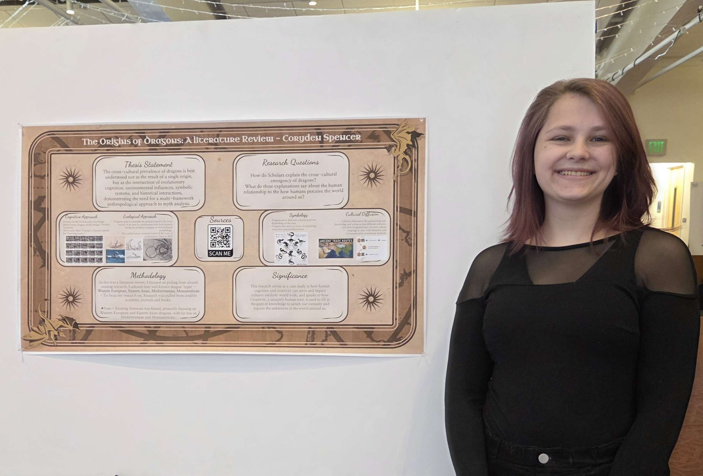

I am a recent Bachelor's Degree graduate from Fort Lewis College in Durango, Colorado. During College, I worked at the Gender and Sexuality Resource Center on Campus as student worker prior to working at the campus Library as a circulation desk attendent. I was the Secretary of the Sexuality and Gender Alliance (SAGA) on campus my freshman year. I was a co-event cordinator for the Wellness Peer Advisory Council (WellPAC) on campus my sophomore year. My senior year, I was the treasurer of the Anthropology club on campus.
I have a passion for working with people of all background's and identities, as well as event planning and cordination. I am a dilligent worker, and fast learner, always looking to broaden my knowledge and skill set.
I know how to use Google Workspace effectively, and have a basic knowledge of back-end web development.
